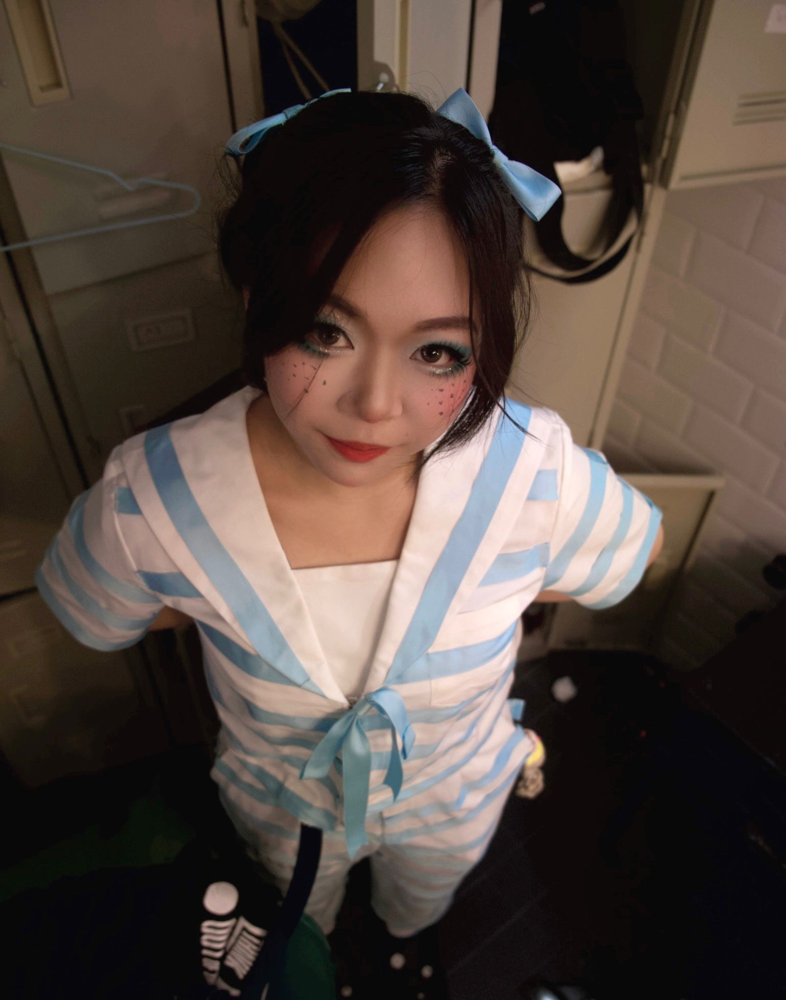
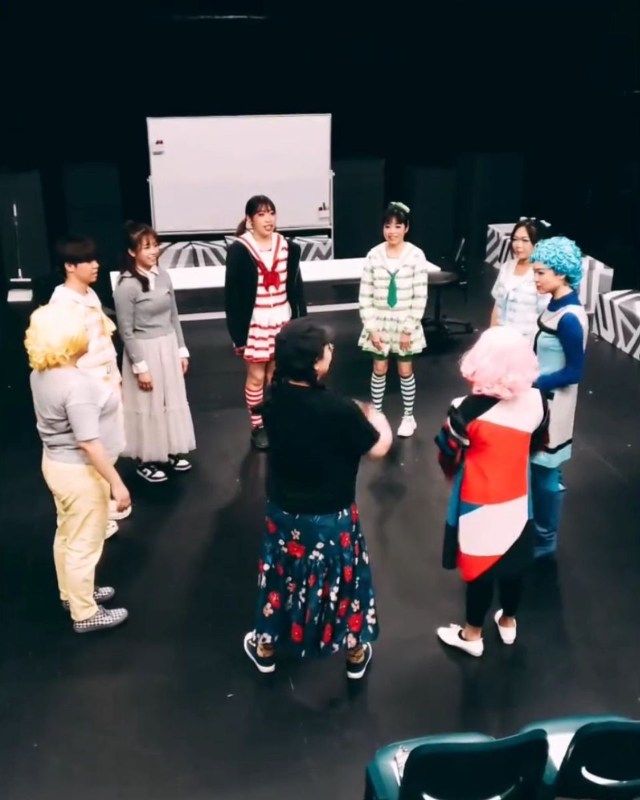
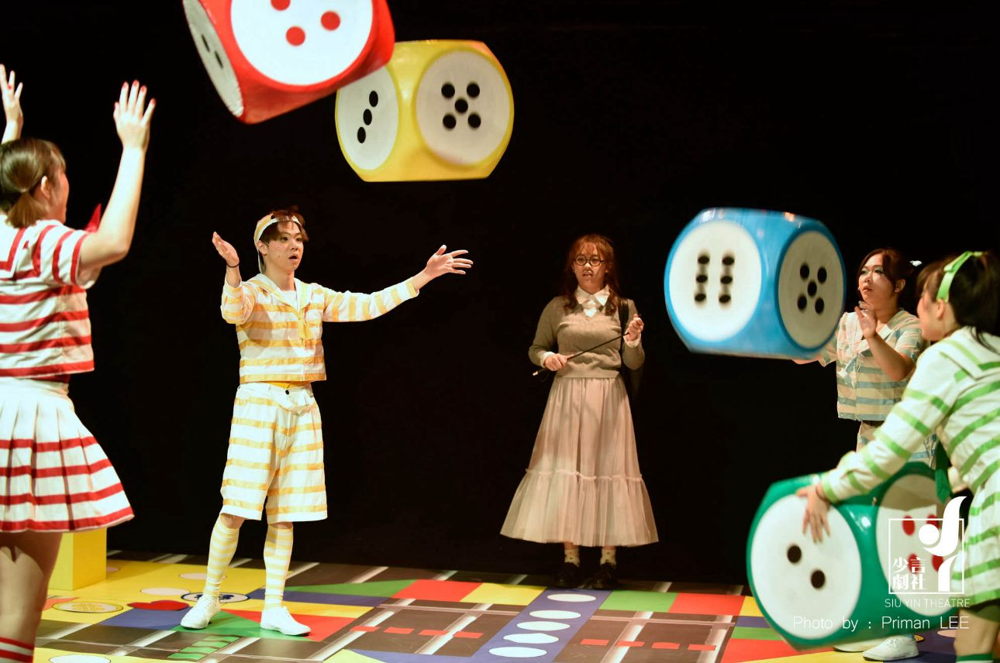
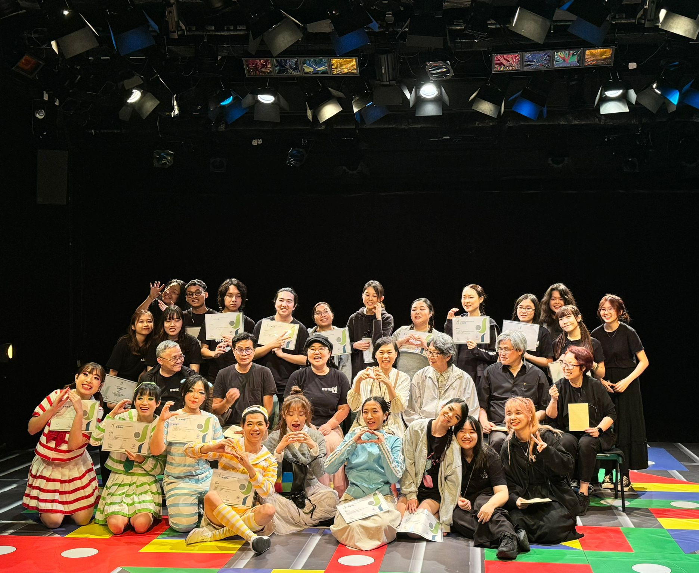

My lifelong love for drama has always been the most steadfast guiding light on my path of growth. From 2023 to 2024, I completed my training in the 7th Youth Troupe of the Shaoyan Drama Club and received my graduation certificate. During that time, every rehearsal, every line, and every moment of working with my fellow actors constantly inspired me to move towards a more professional path.
Afterward, I was fortunate enough to participate in the premiere of the stage play "The Chronicles of Time" and play the female lead. Standing under the spotlight, I not only had to grasp the emotional layers of the character, but also learn how to perform steadily under pressure and communicate sincerely in ensemble scenes. The applause and reflection from those performances allowed my acting skills to solidly transform in real-world practice, and it also made me more certain—drama is the direction I am willing to pursue for the rest of my life.
Key milestones in my theatre development
Joined SSCC Drama Team, began studying under Mr. Ip Kwan Pok, Michael at The Little Guy Space. Discovered my passion for performance.
Won Outstanding Collaboration Award with my team. This experience taught me the true value of teamwork and the magic of theatre.
Completed intensive training at Siu Yin Drama Club and received graduation certificate. Every rehearsal and line inspired me to pursue a professional path.
Performed as the female lead in the premiere of "The Chronicles of Time". Learned to perform under pressure and communicate sincerely in ensemble scenes.
Enrolled in "Starting from Theatre: The Art and Craft of Drama" to deepen professional knowledge and enhance performance skills.

Female Lead
A powerful production that challenged me to explore deep emotional layers while maintaining steady performance under pressure.
Ensemble Cast
A production that helped sharpen my acting skills and taught me the importance of ensemble work.
Moments from my journey


